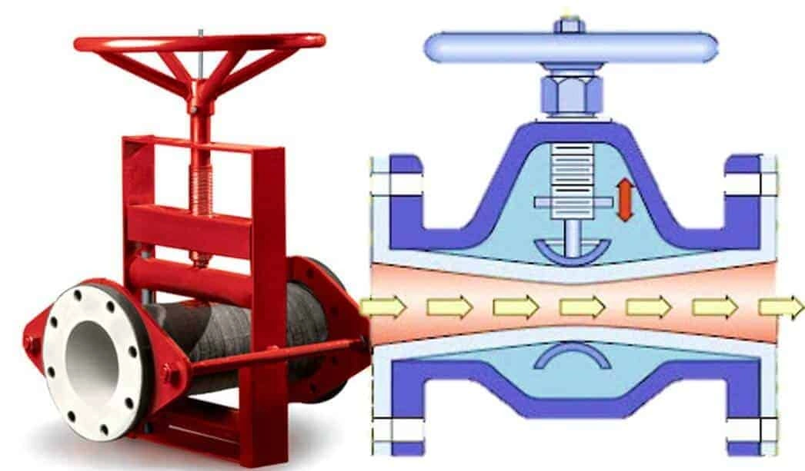

Pinch Valves

Pinch valves are flex-body valves consisting of a flexible tube that is pinched either mechanically or by the application of a fluid pressure to the outside of the valve body.
Advantages
- Suitable for isolation.
- Suitable for control.
- Suitable, but less common, for diversion.
- Suitable for use as a check valve.
- Low resistance to flow.
- Suitable for chemical applications.
- Suitable for slurry applications.
- Generally, low operational costs.
Disadvantages
- Not suitable for relief.
- Slow actuation.
- Generally, high capital costs.
Additional Information
- Fluid and mechanism are seperated by flexible tube or pipe making pinch valves well suited for hygenic environments. The also protects the mechanisms against damage due to solid suspensions or slurries.
- Larger pinch valves require much greater actuator force resulting in a large valve footprint.
- The absense of seals or packing makes pinch valves easy to maintain, hence their low operational costs.
Actuation
Pinch valves are actuated by linear or multi-turn actuators. This could be pneumatic or hydraulic using a piston or a diaphragm. Linear actuation is also possible using electric and manual actuators. This could be manual through the use of a multi-turn hand-wheel, or electric using a motor and gear box attached to a rack and pinion or scotch yolk to convert between rotational and linear motion.
Additional Resources